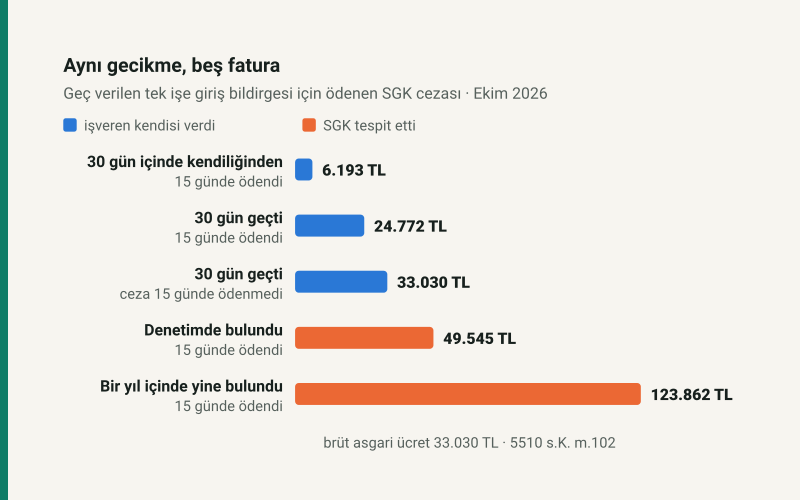

Kısa cevap
Tebliğ edilen: sigortalı başına bir brüt asgari ücret, 33.030 TL (5510 s.K. m.102/1-a). Fiilin işlendiği tarihteki asgari ücret esas alınır.
Ödenen: bildirge süresi bittikten sonraki 30 gün içinde kendiliğinden verilir ve ceza tebliğden sonraki 15 gün içinde ödenirse tebliğin %18,75'i, 6.193 TL. 30 gün geçmişse yalnız peşin ödeme indirimi kalır: 24.772 TL.
Denetim bulursa: ceza iki katı ve kendiliğinden verme indirimi yok, 15 günde ödenirse 49.545 TL. Bir yıl içinde yeniden bulunursa beş katı, 123.862 TL.
Aynı eksik, beş fatura
Bir işçi işe başladı, işe giriş bildirgesi zamanında verilmedi. Kanun bu tek fiil için tek bir ceza yazıyor; ama SGK'nın tahsil ettiği tutar, olayın sonraki iki haftasında verilen kararlarla belirleniyor. Ekim 2026'da işlenmiş, tek sigortalılık bir gecikme için:
| Yol | Tebliğ | Ödenen | Tebliğe oranı |
|---|---|---|---|
| 30 gün içinde kendiliğinden verildi, 15 günde ödendi | 33.030 TL | 6.193 TL | %18,75 |
| 30 günden sonra verildi, 15 günde ödendi | 33.030 TL | 24.772 TL | %75 |
| Geç verildi, ceza 15 günde ödenmedi (ayrıca gecikme cezası ve zammı) | 33.030 TL | 33.030 TL | %100 |
| Denetimde tespit edildi, 15 günde ödendi | 66.060 TL | 49.545 TL | %75 |
| Bir yıl içinde yeniden tespit edildi, 15 günde ödendi | 165.150 TL | 123.862 TL | %75 |
Tablonun ilk iki satırı arasındaki tek fark takvim: bildirge 30 gün içinde verildiyse tutar dörtte birine iniyor. İkinci ile dördüncü satır arasındaki fark ise kimin fark ettiği. İşveren kendisi verdiğinde ceza bir asgari ücret; SGK denetimi, mahkeme kararı ya da başka bir kurumun bilgisiyle ortaya çıktığında iki asgari ücret, üstelik kendiliğinden verme indirimi olmadan.
İki indirim, ikisi de 15 güne bağlı
Kanunda birbirinden bağımsız iki indirim var ve ikisi de cezanın tebliğden sonraki 15 gün içinde ödenmesini şart koşuyor.
- Kendiliğinden verme (m.102/2). Bildirge, yasal süresinin bittiği günü izleyen günden başlayan 30 gün içinde, SGK bir tespit yapmadan verilirse ceza dörtte bir tutar üzerinden uygulanır. Bu indirim işe giriş, işten ayrılış ve işyeri bildirgelerinde var; muhtasar ve prim hizmet beyannamesinde yok.
- Peşin ödeme (m.102/5). Her idari para cezası, tebliğden itibaren 15 gün içinde itiraz edilmeden ya da dava açılmadan ödenirse dörtte üçüyle kapanır. Peşin ödemek dava açma hakkını kaldırmaz.
İkisi birlikte gerçekleşince SGK'nın 2020/8 sayılı Genelgesine göre tebliğ edilen tutarın "dörtte birinin dörtte üçü" tahsil ediliyor: 33.030 × 1/4 × 3/4 = 6.193,13; kuruş atılınca 6.193 TL. Genelgenin kendi örneği aynı aritmetiği 2017 asgari ücretiyle yapıyor: 1.777 × 1/4 × 3/4 = 333 TL.
Bunun pratik sonucu: tebligat geldiğinde 30 günlük şart çoktan ya sağlanmış ya kaçırılmış olur, ama 15 günlük şart hâlâ elinizdedir. 15 gün geçerse iki indirim de gider; ceza tamamıyla ve gecikme cezası ile gecikme zammıyla tahsil edilir.
30 gün hangi günden sayılır?
İşe giriş bildirgesi, sigortalı işe başlamadan önce verilir (5510 m.8). İstisnalar sınırlı: inşaat, balıkçılık ve tarım işyerlerinde en geç çalışmaya başlatıldığı gün; ilk kez işyeri bildirgesi verilecek işyerlerinde, ilk sigortalının çalışmaya başladığı tarihten itibaren bir ay içinde başlayanlar için o bir aylık sürenin sonuna kadar.
Örnek: işçi 3 Kasım 2026 salı işe başlıyor. Bildirgenin son günü 2 Kasım. 30 günlük kendiliğinden verme süresi 3 Kasım'da başlar ve 2 Aralık'ta biter. Bu tarihe kadar verilen bildirgenin cezası, 15 gün içinde ödenirse 6.193 TL; 3 Aralık'ta verilirse 24.772 TL. Bir gün, 18.579 TL.
Kişi sayısı arttıkça: tavan yok
İşe giriş cezasının üst sınırı yok; her sigortalı için ayrı bir asgari ücret yazılır. Bu, aynı ayın beyannamesinden farklı. Muhtasar ve prim hizmet beyannamesi geç verildiğinde ceza sigortalı başına asgari ücretin beşte biri, ama işyeri ve dönem başına en çok iki asgari ücret; 10 sigortalıda tavana ulaşılır ve 500 kişilik işyerinin cezası da aynı kalır.
| Sigortalı | İşe giriş, 30 gün içinde kendiliğinden | İşe giriş, denetimde tespit | Beyanname (asıl) geç |
|---|---|---|---|
| 1 | 6.193 TL | 49.545 TL | 4.954 TL |
| 3 | 18.579 TL | 148.635 TL | 14.863 TL |
| 10 | 61.931 TL | 495.450 TL | 49.545 TL |
| 25 | 154.828 TL | 1.238.625 TL | 49.545 TL |
Bir işe alım dalgasında bildirgeler unutulduysa bedel hızla büyür: 10 kişide kendiliğinden ve zamanında düzeltilen hata 61.931 TL, denetimde bulunan aynı hata 495.450 TL. Aynı işyerinin bütün beyannamesini geç vermesinin cezası ise 15 günde ödenirse 49.545 TL.
Denetimde bulunan sigortalı, işe giriş cezasının yanında bir beyanname cezası da doğurur: bildirilmeyen hizmet için düzenlenen beyanname m.102/1-m-4'e göre ayrıca cezalandırılır (bilanço esasında sigortalı başına bir asgari ücret, en çok üç; diğer defterlerde yarım, en çok iki). Primler, gecikme zammı ve varsa teşvik kaybı bunun dışında.
Hangi yılın asgari ücreti?
Cezanın tebliğ edildiği ya da ödendiği yılın değil, fiilin işlendiği tarihin asgari ücreti. Aralık 2026'da işe başlayan işçinin geç bildirgesi Ocak 2027'de tebliğ edilse de 2026 asgari ücretiyle hesaplanır. 2027 asgari ücreti açıklandığında bütün tutarlar onunla aynı oranda büyüyecek: ceza kanunda TL olarak değil, asgari ücretin katı olarak yazılı.
Kendi durumunuz
Fiili, sigortalı sayısını, defter türünü ve tarihi girip tebliğ edilecek cezayı ve ödenecek tutarı SGK idari para cezası hesaplama aracında görebilirsiniz. Araç işten ayrılış, işyeri bildirgesi, beyanname, defter ibrazı ve eksik işçilik cezalarını da aynı kurallarla hesaplar.
Varsayımlar ve sınırlar
- Tutarlar Ekim 2026'da işlenmiş fiil içindir; brüt asgari ücret 33.030 TL. Kuruş, SGK uygulamasındaki gibi atıldı.
- "Tespit" satırı, bildirgenin mahkeme kararı, SGK denetimi, başka bir kamu idaresinin denetimi ya da bankalar ve kamu kurumlarından alınan bilgiyle anlaşıldığı durumdur (m.102/1-a-2). Beş kat, ilk tespitten sonraki bir yıl içinde aynı işyerinde yeniden tespit hâlidir (m.102/1-a-3).
- Prim borcu, gecikme cezası, gecikme zammı ve teşviklerin kaybı hesaplanmadı.
- Yazı tek işyeri ve tek dönem içindir; itiraz sürecinin sonucu öngörülmez.
Kaynaklar
- 5510 sayılı Kanun m.8 (işe giriş bildirgesinin süresi), m.102 (idari para cezaları, indirimler, itiraz); mevzuat.gov.tr güncel metni, 22 Ekim 2026'da okundu
- Sosyal Güvenlik Kurumu, 2020/8 sayılı İdari Para Cezası Genelgesi: fiil tarihindeki asgari ücret, kuruşun atılması, iki indirimin birlikte uygulanışı ve sayısal örnekler
- Brüt asgari ücret: sitenin bordro motoru parametreleri
Tutarlar aracın çekirdeğinden (hesap.js) üretilir. Çekirdeğin testi, Genelgedeki on bir sayısal örneği o yılların asgari ücretiyle yeniden hesaplar; yazıdaki her rakam ayrıca otomatik testle sayfada aranır.
Sık sorulan sorular
İşe giriş bildirgesi geç verilirse ceza ne kadar?
Sigortalı başına bir aylık brüt asgari ücret, 2026'da 33.030 TL. 30 gün içinde kendiliğinden verilir ve ceza 15 gün içinde ödenirse 6.193 TL tahsil edilir.
İşe giriş bildirgesi hiç verilmezse ve denetimde bulunursa?
Sigortalı başına iki asgari ücret, 66.060 TL; 15 gün içinde ödenirse 49.545 TL. Kendiliğinden verme indirimi uygulanmaz. Bir yıl içinde yeniden bulunursa beş asgari ücret.
SGK cezasında indirim var mı?
İki tane: bildirge süresi geçtikten sonra 30 gün içinde kendiliğinden verilirse dörtte bire iner; her ceza tebliğden sonraki 15 gün içinde peşin ödenirse dörtte biri silinir. İkisi birlikte tebliğin %18,75'ini bırakır.
Ceza hangi yılın asgari ücretiyle hesaplanır?
Fiilin işlendiği tarihteki brüt asgari ücretle; tebliğ ya da ödeme tarihindekiyle değil.